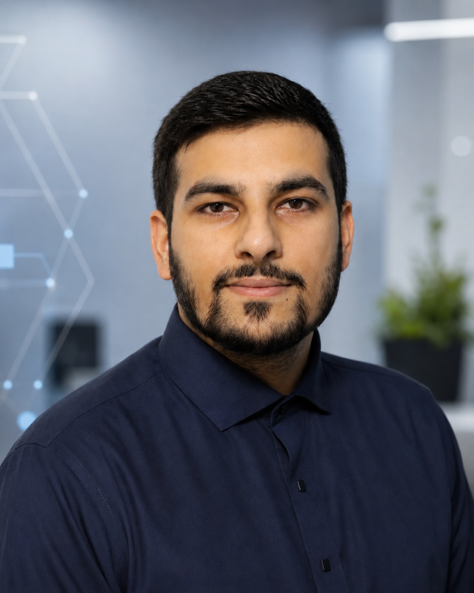

IT-Support & Service Desk
Störungen aufnehmen, systematisch eingrenzen, verständlich kommunizieren und Lösungen sauber dokumentieren.

Ich bin Danial Ahmed.
IT-Administrator (IHK) und IT-Support-Specialist (IHK) mit abgeschlossener Weiterbildung in Softwareentwicklung & Cloud. Ich suche eine Festanstellung, in der guter Service und verlässliche IT zusammengehören.
Ab sofort verfügbar · Hemer / NRW · vor Ort, hybrid oder remote
Guter IT-Support beginnt mit den richtigen Fragen. Ich arbeite mich strukturiert in Störungen und Systeme ein, dokumentiere nachvollziehbar und behalte dabei die Menschen im Blick, die auf funktionierende Technik angewiesen sind.
Eine Verbindung aus praktischem IT-Support, Administration und Cloud-Grundlagen.
Störungen aufnehmen, systematisch eingrenzen, verständlich kommunizieren und Lösungen sauber dokumentieren.
Grundlagen in Windows Server, Active Directory, Linux, Benutzerverwaltung und Netzwerkdiensten.
AWS-Grundlagen, Docker, Terraform und CI/CD – belegt durch Zertifizierung und eigene Lernprojekte.
Eigene und im Rahmen der Weiterbildung entstandene Projekte – mit nachvollziehbarem Code und Dokumentation.
Automatisierte Bereitstellung einer Aufgaben- und Ticketverwaltung über Docker, Terraform und GitHub Actions.
Container-basiertes Monitoring und Logging mit Prometheus, Grafana und Loki für Server und Container.
Reproduzierbare AWS-Infrastruktur mit Terraform, darunter Netzwerk, Rechenleistung, Speicher und Monitoring.
Gesucht wird eine Festanstellung im IT-Support, Service Desk, in der Systemadministration oder im Microsoft-365- und Cloud-Umfeld.
Gespräch vereinbaren →